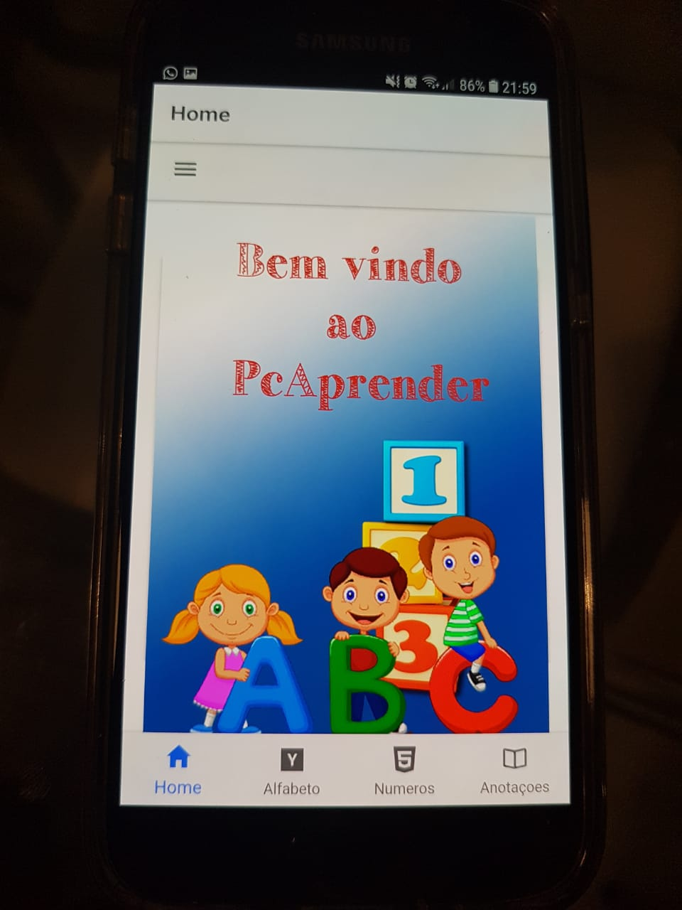
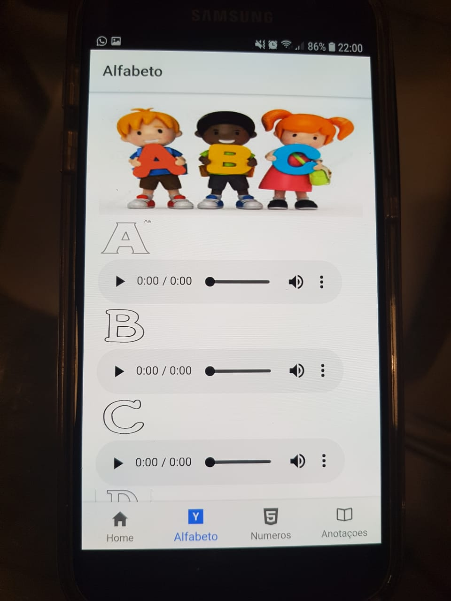
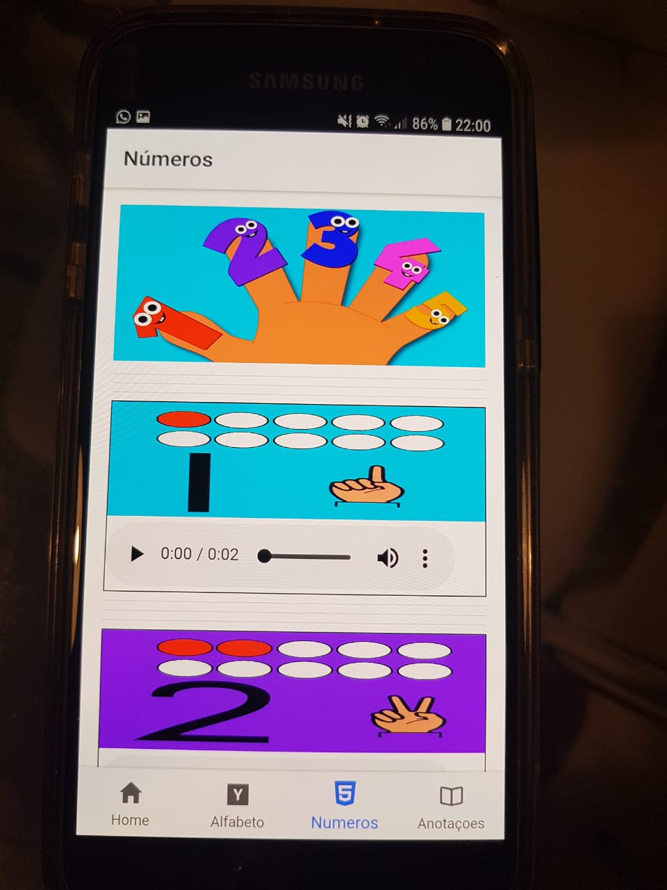
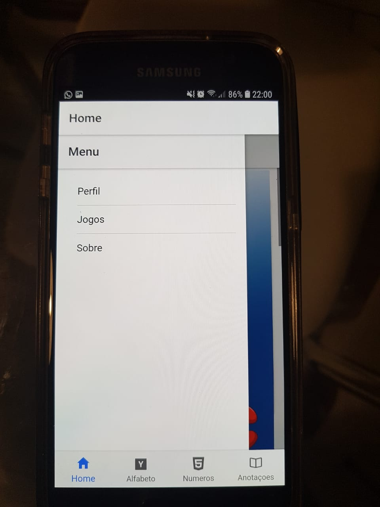
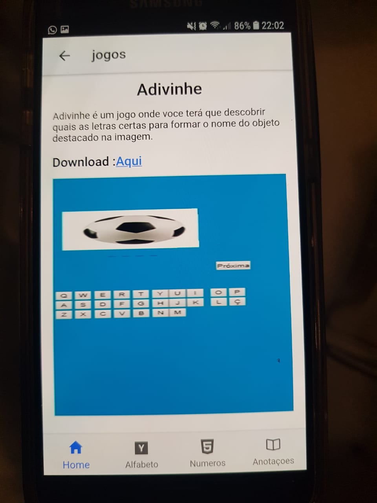
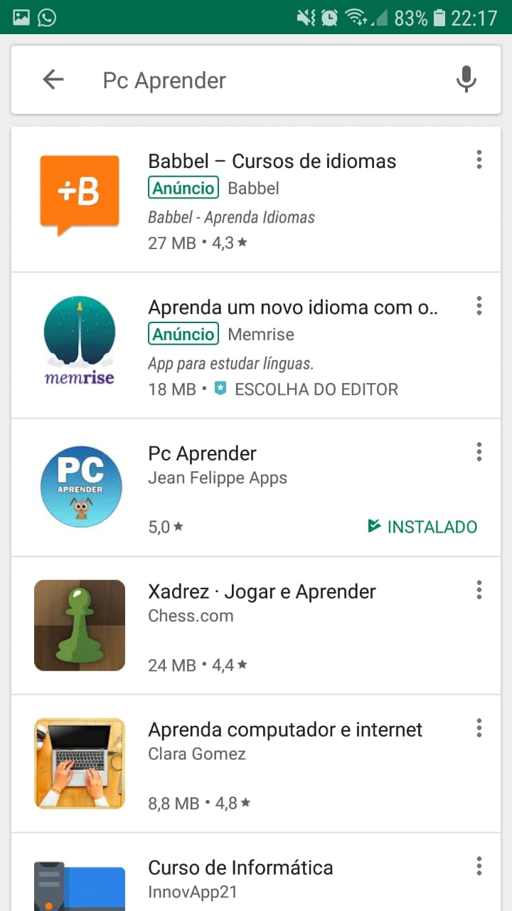

Pc Aprender - App para alfabetização
Tecnologias Utilizadas
- HTML
- CSS
- Typescript
- Ionic
- Game Engine Construct
Descrição do projeto
O Pc Aprender é um App para Android desenvolvido utilizando Ionic e publicado na playstore gratuitamente afim de ajudar na alfabetização de criançãs.
Este projeto foi desenvolvido inicialmente com o intuito de ser o meu TCC no meu último período de graduação.
Nessa tela,a criança poderá aprender o alfabeto na ordem correta e ouvir o som de cada letra.
Nessa tela,a criança poderá aprender a contar os números e como expressar os números usando seus dedos.
Na Tela de Introdução do Aplicativo,existe a possibilidade da criança abrir um menu lateral,onde costa algumas opções como Perfil,Jogos e Sobre.
Ao clicar na opção jogos,é exibida a tela de jogos descrevendo cada um dos jogos disponíveis gratuitamente como o Adivinhe e o MemoriaPcAprender e seus respectivos links para download.
O aplicativo se encontra disponível para download gratuito na playstore.
← Voltar ao portfolio